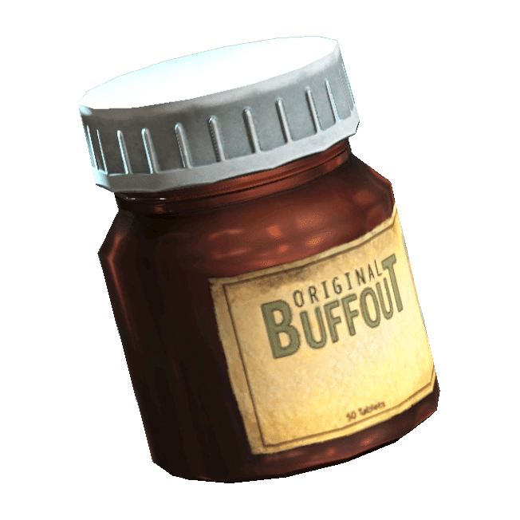

バファウト
「バファウト」は、筋力、反射神経、そして持久力を高める高度なステロイドのブランドであり、大戦前には50錠入りのボトルで販売されていました。
中毒性が高いにもかかわらず、戦前のアスリートの間で人気があり、その秘密裏かつ不正な使用により、アマチュアの間でも使用が広まりました。
また、米軍の一部の軍人も使用していました。
これを使用することで、彼らは「不必要な」訓練の負担なく、より長く走り、より激しく運動することができました。
この薬物の人気により、バフタス（メンタスと混合）やサイコバフ（軍事的な改良版でサイコと混合）などのハイブリッド・バリアントが数多く誕生しました。
しかし、サイコとは異なり、バファウトは軍での使用が正式に承認されることはありませんでした。
核ホロコースト後も、その特性のおかげでバファウトの人気は持続しています。
筋力が増加することで、ウェイストランドの住人はいくつかの木の板を楽に打ち破ったり、対戦相手を殴りつけて降伏させたりすることができます。
そのため、Vault Cityや娯楽施設など、多くの場所でその使用が禁止されています。
例えば、ニュー・レノのカジノやバーの客は、バファウトの使用を禁じられていました。
中毒性のあるステロイドであるにもかかわらず、適切に使用すれば、バファウトは子供のくる病を容易に治療することができます。
バリアント
オリジナル・バファウト
関連作品：Fallout, Fallout 2, Fallout 3, Fallout: New Vegas, Fallout 4, Fallout 76, Fallout Tactics, Fallout: The Board Game
「オリジナル」の薬物は、筋力、反射神経を高め、最大ヘルスを上昇させますが、中毒性が非常に高いという欠点があります。
バフジェット
関連作品：Fallout 4
『Fallout 4』で導入されたこのバリアントは、ケミストリー・ステーションでバファウトとジェットを組み合わせて作られます。
身体能力の向上、反射神経の亢進、アドレナリンの爆発の結果として、通常のバファウトの効果に加えて、時間を15秒間遅くする効果があります。
サイコバフ
関連作品：Fallout 4, Fallout 76
『Fallout 4』で導入されたもう一つのバファウト・バリアント。
サイコとバファウトをケミストリー・ステーションで混ぜて作られ、一時的に極端な筋力、耐久力、および攻撃性を提供します。
与えるダメージ +25%、筋力 +3、持久力 +3を付与します。
バフタス
関連作品：Fallout 4, Fallout 76
『Fallout 4』で導入されたもう一つのバファウト・バリアント。
バファウトとメンタスをケミストリー・ステーションで混ぜて作られ、身体能力と認識力の両方を高めます。
筋力 +3、持久力 +3、HP +65、知覚力 +3を付与します。
注記
『Fallout 2』では、ブロークン・ヒルズのエリックが、バファウトを服用するとプレイヤーキャラクターの精神が「苦しむ」と述べていますが、この機能は実際にはゲーム内に存在しません。
レイド民皆大好きサイコバフの元となるバファウトの説明です。
76以外では薬物を使ったことは無かったのですが、Fallout76では強敵との戦闘時間がそこまで長くなかったり、筋力が増える為、緊急時の重力ブーストとして使用出来るなど有用な場面が多い薬物になっています。
出来ることならサイコバフとして使用するのをオススメします。

クリエイティブ・コモンズ 表示-継承ライセンス (CC BY-SA 3.0) の下で提供されています。
コミュニティ維持のため、寄付を受け付けております。
> COMMENTS